Effects of Information
The survey includes an embedded experiment, in which some of the respondents were randomly assigned to watch an informational video about air pollution. The video was available in both English and Luganda, and respondents assigned to watch the video watched it in the language the survey was being conducted in. There were two versions of the video. The “short” version included a background on the causes of air pollution in the context of Kampala, how air pollution is measured, and some of the health effects of air pollution. The “long” version was identical to the short version but also included a section on government initiatives to reduce air pollution, such as those in the UK, China, and Ethiopia. We did not find significant differences in effects between the two videos, and for simplicity we combine them into one category in the figures below.
Video production: Steven Agaba
In this section, we show the effect of the video on levels of respondent knowledge, concern, policy prioritization, and intent to change behavior. We measured the effects of the video in the short-term – immediately after watching the video – and in the long-term, in a follow-up survey conducted six months later. Overall, we find that the video did shape respondents’ beliefs in the short-term, but most of these effects did not last after six months.
In between the two survey rounds, we also included an experiment where respondents who had consented to receive text messages were sent weekly SMS notifications about their local air quality, using data from AirQo. We were interested to see if receiving regular updates affected respondents’ interest in or knowledge about air quality. We did not find evidence that SMS notifications had any of these effects.
Short-Term Effects of Informational Video
Concern
First, we find that the video moderately increased levels of concern about air pollution among respondents. Those who saw the video were more likely than those who did not to say they were “very worried” about the effect of air pollution on their health and in their neighborhood, and less likely to say they were “not very worried.” They were also slightly more likely to say that air pollution was the greatest concern in their neighborhood, though air pollution was not the greatest concern for the majority of respondents.
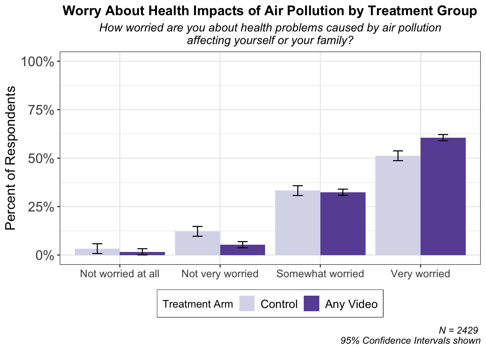
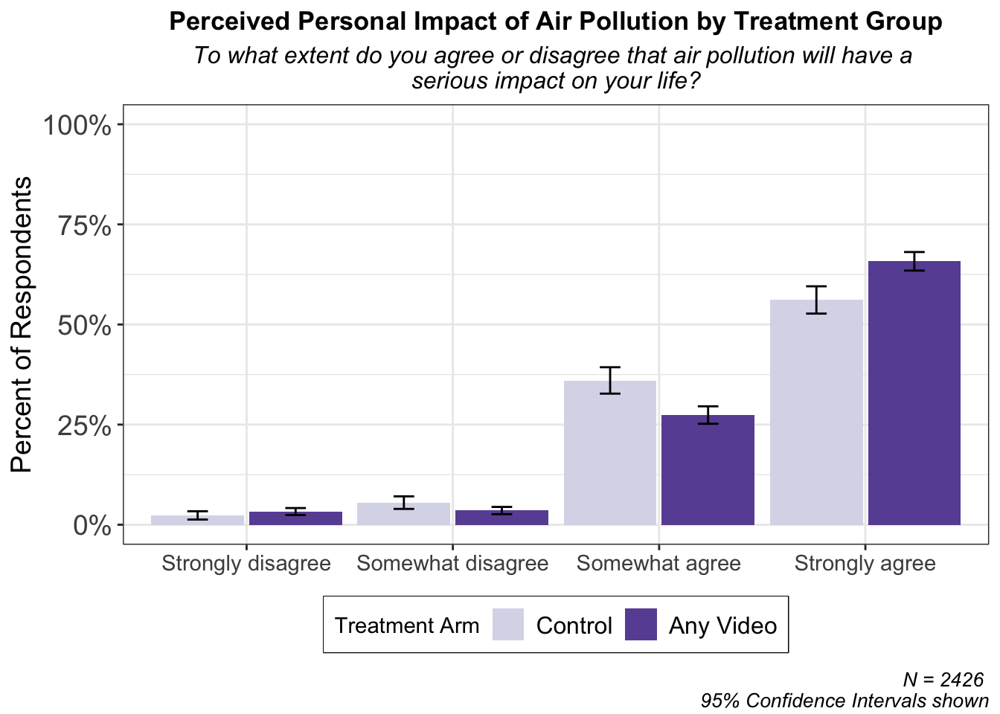
Responsibility
When asked whose responsibility it is to reduce air pollution, most respondents said that government and citizens were equally responsible. The video did not have an effect on perceptions of who is most responsible for air pollution.

Prioritization
Those who watched the video were slightly more likely to say that air pollution was the biggest environmental issue in their neighborhood, but the majority of respondents sanitation and trash disposal as bigger problems. Although air pollution has a greater impact on health than sanitation or trash collection, respondents do not perceive it to be as urgent an issue as these, perhaps because the cost is less visible and accumulates over time.
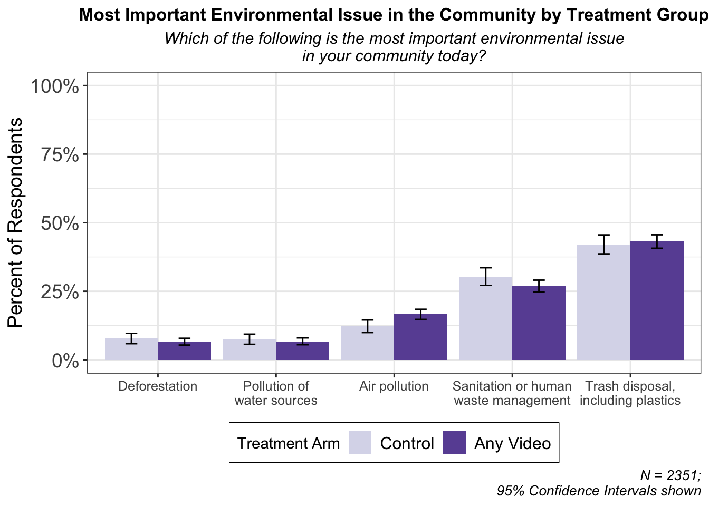
Knowledge
The video increased respondents’ knowledge about the severity of air pollution in Kampala, as well as some of its effects on health. While most respondents know or guess that air pollution matters for lung health, those who watched the video also knew that pollution affects the heart. In fact, air pollution affects the entire body, because air pollution particles that we breathe in enter our blood stream and travel to all parts of the body. Those who watched the video were also more likely to know that governments elsewhere have been able to reduce pollution level through policy efforts.
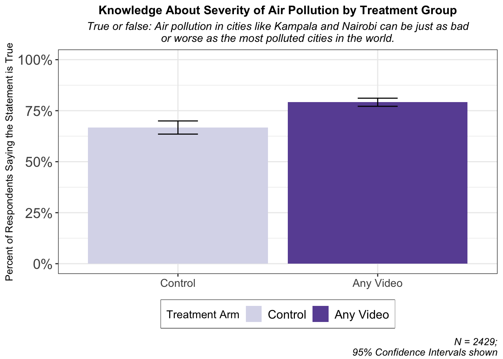
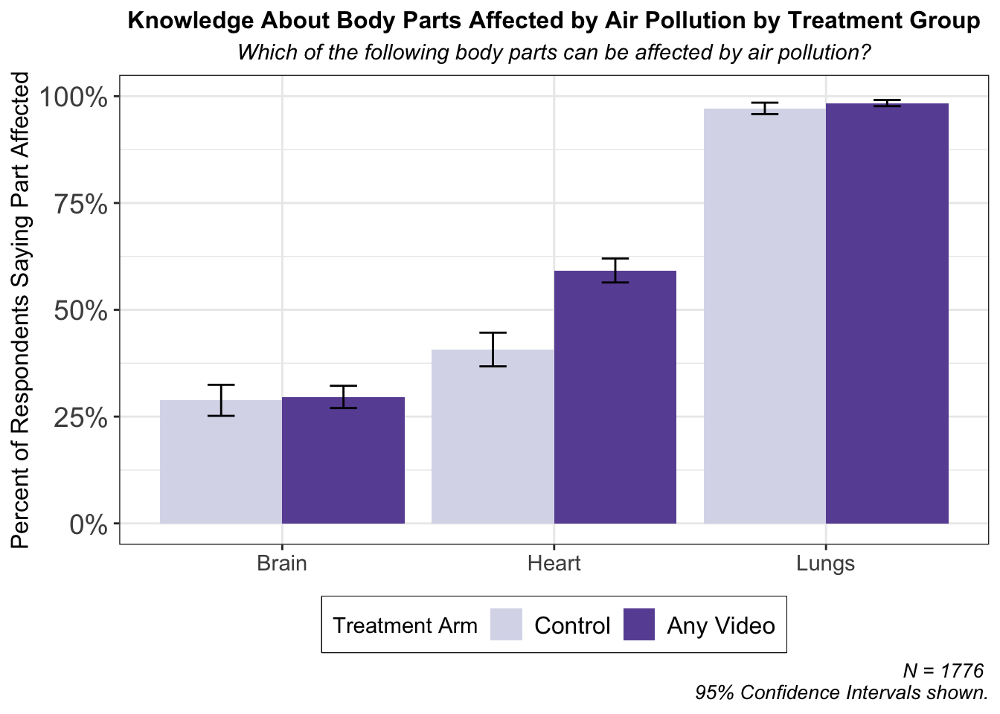
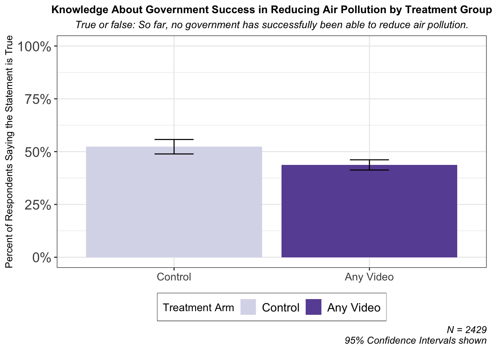
Policy Support
Watching the video slightly increased respondents’ support for fines for burning trash (a policy currently in place but weakly enforced) but not for removing highly polluting vehicles. However, most respondents agreed with both of these policies regardless of whether or not they saw the video.
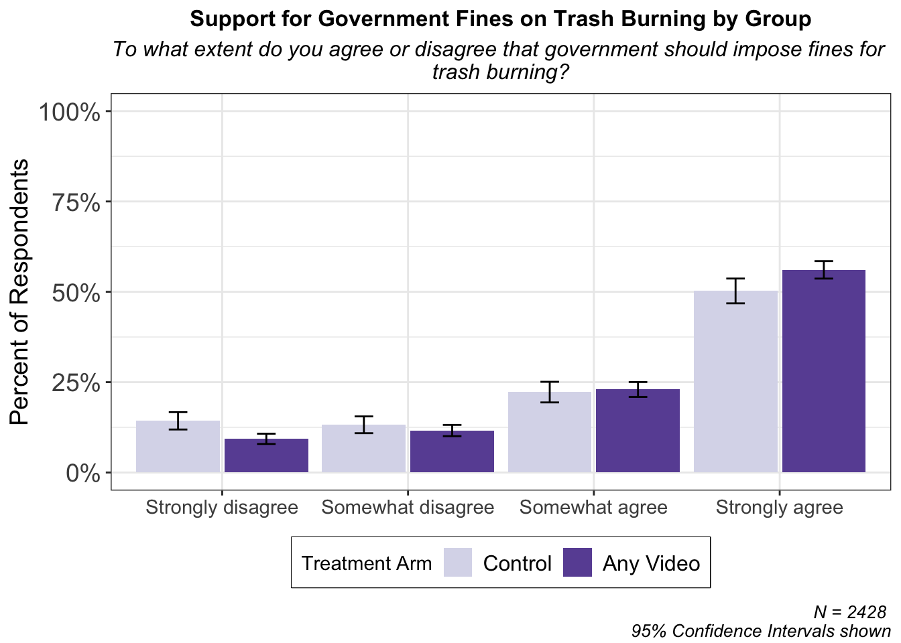
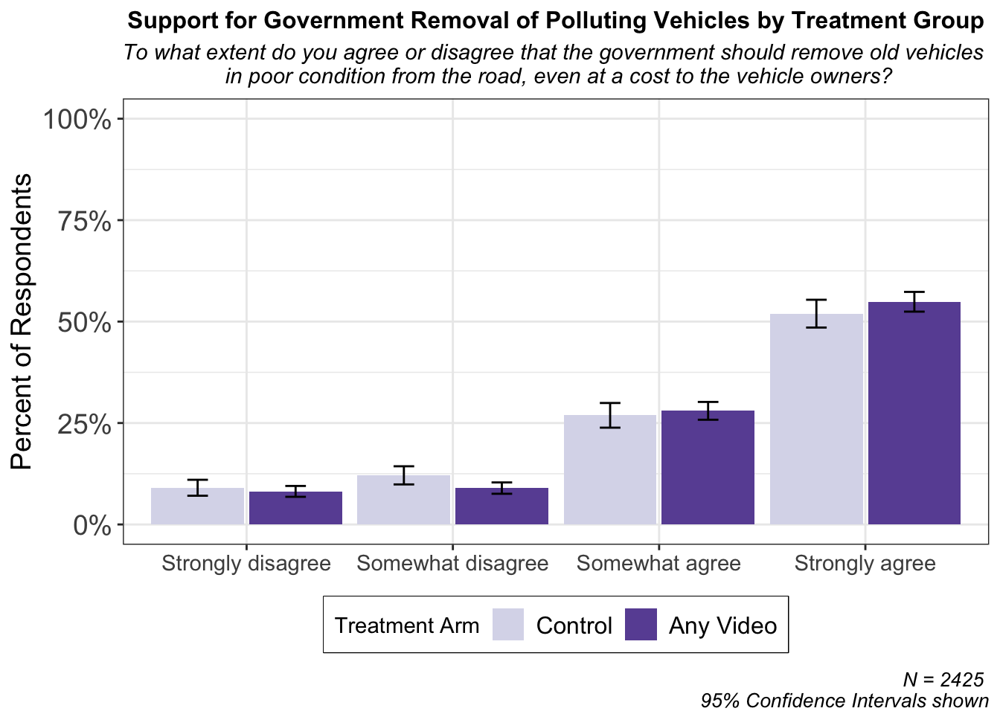
Behaviour
The video did not affect respondents’ intention to take action about air pollution, but the vast majority of respondents (over 80 percent) said they would be interested in receiving text messages informing them about local air pollution, and the majority said they would be willing to join a neighborhood group to come up with a plan to reduce pollution. Just under half wrote notes to the mayor expressing their concern about air pollution. Overall, these findings suggest the potential for significant engagement from the public concerning air pollution.
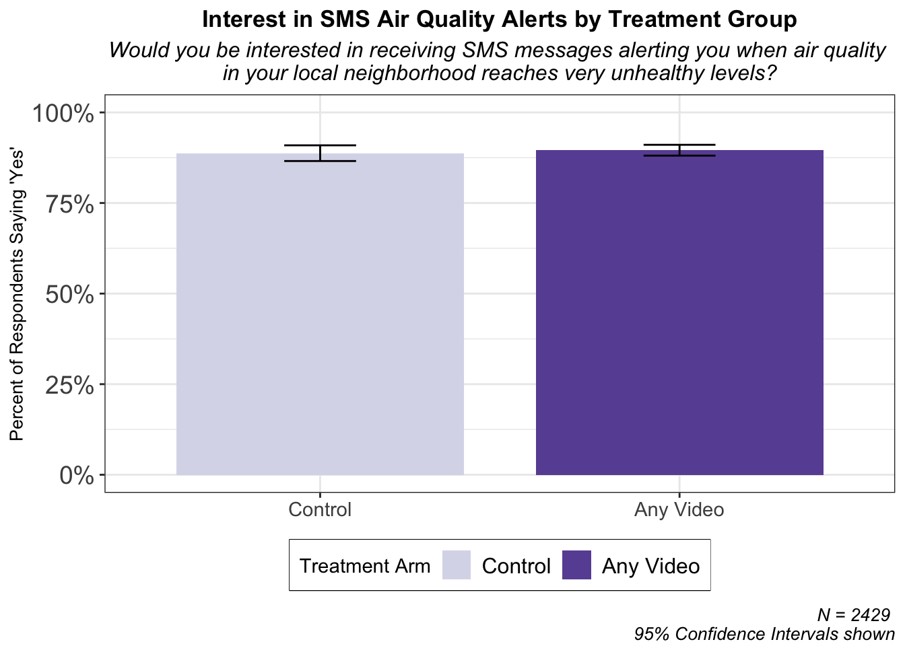
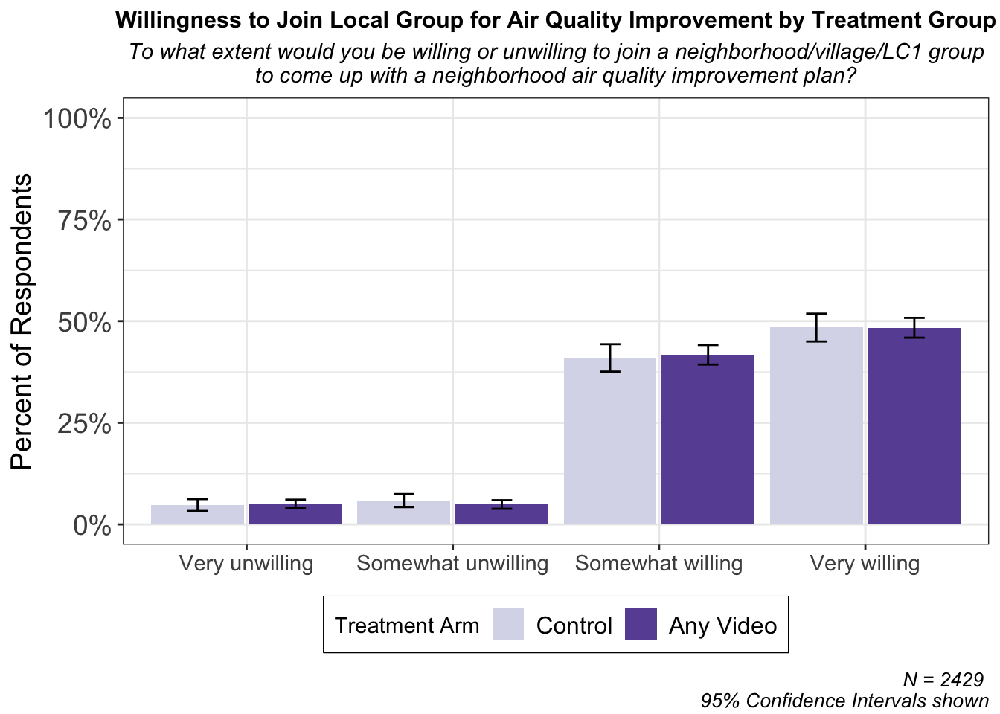
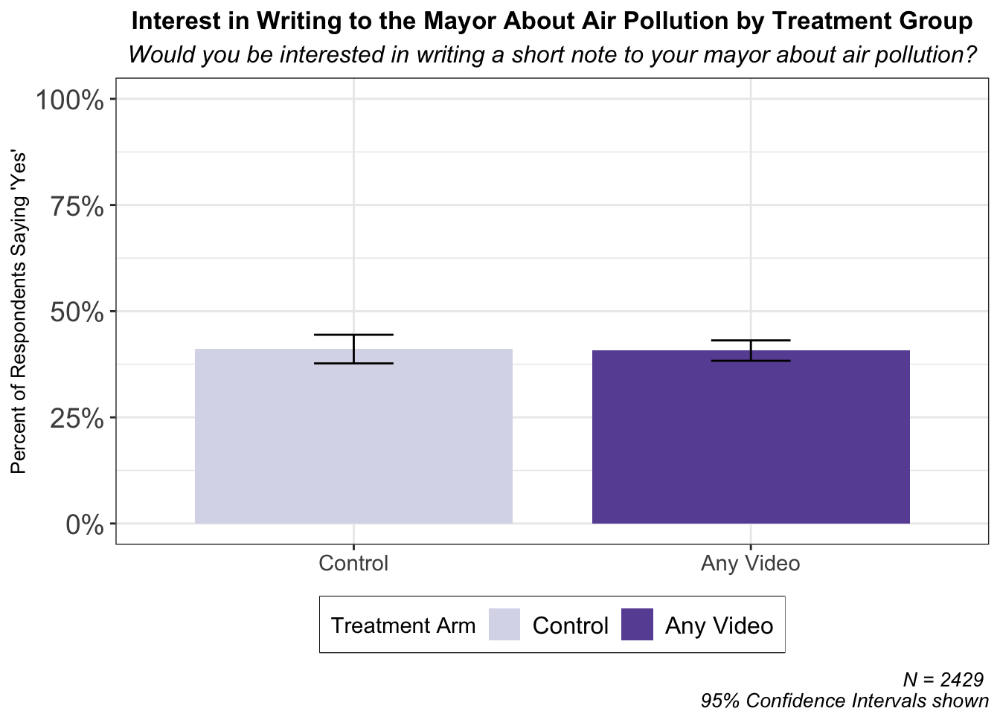
Long-Term Effects of Informational Video
We surveyed respondents again in May 2025, six months after the original survey. As shown below, most of the effects of the video did not last.
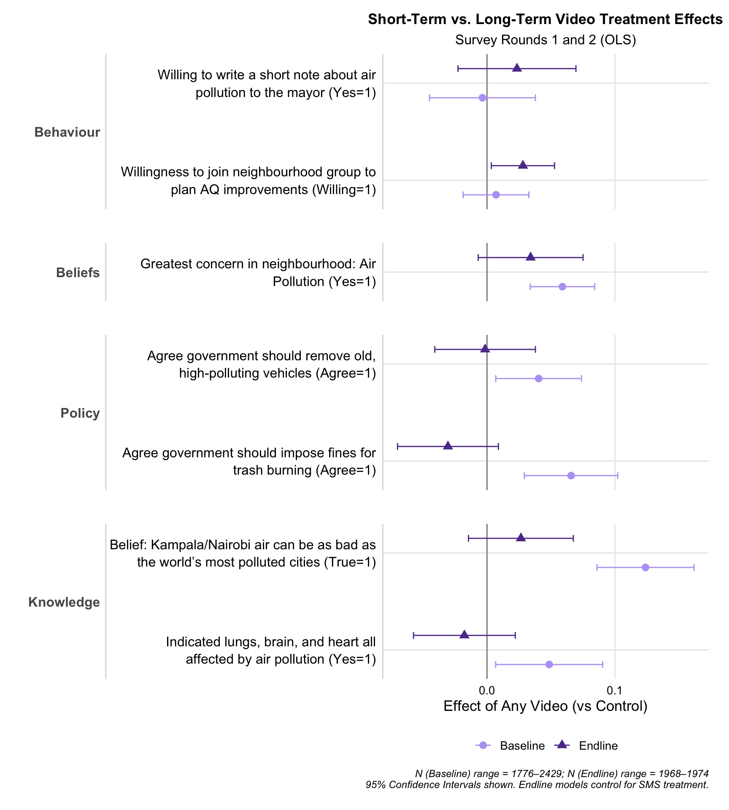
Effects of Air Pollution SMS
In between the two rounds of surveys, those respondents who indicated in the baseline survey that they would be interested in receiving text messages about their local air quality (over 80 percent of all respondents) were randomly assigned to either receive weekly messages or not. These messages were sent out for four consecutive weeks, roughly in the middle of the six month period between surveys. As shown in the figure below, we did not find that these messages affected respondents’ beliefs.
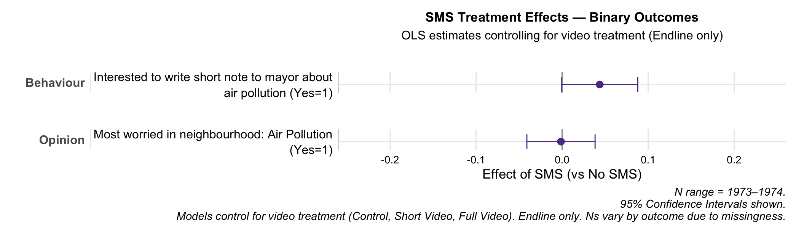
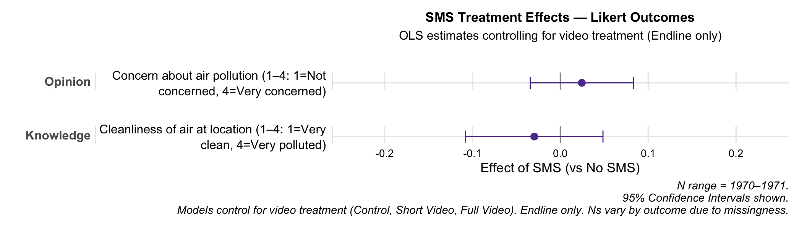